Come leggere i grafici (vale per tutti)
- ĉ = soluzione di A ĉ = b dai momenti. A ogni N il sistema si ricalcola da capo. Q = I per Hermite, Q = L H−1 per la Logistica: stesso polinomio, coordinate diverse. Per questo L1/L2/log-L2 di Hermite e Logistica coincidono (fino a dove il sistema è risolvibile). Aitchison no: cambia il peso ν.
- c Fourier = ∫ clr(pCOS) φj ν dx (eq. 9). Dipende dalla base e da ν: cH ≠ cL. Le Figure 1–3 e 13 misurano d2(ĉ, c), non |ĉ| e non l’errore di troncamento.
- Asse x “number of moments” / N = ordine del sistema e numero di termini nella somma di p̂N.
- Nota (21/09/2026): il fallback
lstsq per cond(A) > 1014 è stato rimosso da solve_system (non è nel paper; la soluzione a norma minima non risolveva l’eq. 15: residuo ≈ ‖b‖). Le Figure 13–15 sono state rigenerate con LU pura; le figure Heston 3/7/11/12 sono precedenti alla modifica e i loro crolli Hermite a N = 14–16 riflettono ancora il vecchio fallback.
Figura 1 — Coefficienti VG coerente
Gambaro Fig. 1 · file figure_01_coeff_vg.pdf
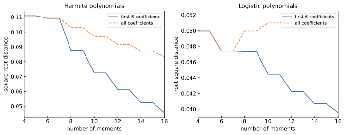
- Che cosa rappresenta
- Due pannelli (Hermite | Logistica). Asse x: N = 4…16 (momenti usati nel sistema). Asse y: √Σ (ĉj(N) − cj)2. Blu: solo j = 1…min(6,N). Arancione: tutti gli N coefficienti. Nessuna densità, nessun troncamento Fourier j > N.
- Interpretazione
- Distanza euclidea, in coordinate della base, tra lo stimatore a momenti e la Fourier-CLR della COS. Le scale y dei due pannelli non si confrontano (cH ≠ cL). Il blu Hermite che continua a scendere dopo N = 6 è la prova che ĉ1…ĉ6 di ĉ(16) non sono quelli di ĉ(6): se si congelasse ĉ(6), il blu sarebbe piatto.
- Hermite
- Blu ≈ 0.11 → 0.047; arancione ≈ 0.11 → 0.083 (non entrambi a 0.05). Coincidono fino a N = 6 per costruzione della somma. Poi scaletta pari/dispari: i dispari non spostano ĉ (mh dispari = 0). Nessuno spike a N = 16.
- Logistica
- Blu: scaletta ≈ 0.047 → 0.039. Arancione: calo a N = 6 poi risale verso ≈ 0.052. Scala più bassa ≠ stima migliore. L’arancione in salita non contraddice Fig. 5: qui il target è cL, là è pCOS.
- Coerenza col paper
- Layout sì. Parametri VG (σ = 0.2, ν = 2/3, θ = 0) inferiti da Heston–Rossi (skew 0, exkurt 2), non dall’appendice di Gambaro. Non è l’eq. 17: manca Σj>N cj2. Ylabel «square root» vs «root square» sono etichette copiate, non due metriche.
Critico VG
Relatore: (1) perché il blu scende dopo N = 6 invece di appiattirsi?
(2) l’arancione Logistic che sale è compatibile con L1 in Fig. 5 che scende?
(3) che curva si otterrebbe paddando ĉ(6) con zeri?
Figura 2 — Coefficienti NIG coerente
Gambaro Fig. 2 · figure_02_coeff_nig.pdf · skew ≈ +0.22 (m1 = 0.05, non μ = 0)
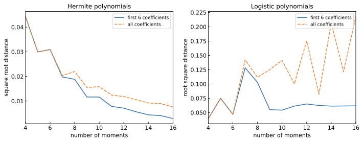
- Che cosa rappresenta
- Stesso oggetto della Fig. 1, sul NIG.
- Interpretazione
- Il NIG è il caso più pulito per ĉH vs cH. Non è «convergenza dei coefficienti» in generale: a N = 16 Hermite all vale 0.0076, Logistic all vale 0.22. Due pannelli, due storie. Non è l’eq. (17): manca il troncamento Σj>N cj2.
- Hermite
- Scende da ≈ 0.04 a 0.0076 (first-6 a 0.0029). Quasi monotona, con micro-risalite (N = 5→6, 7→8). Nessun lstsq a N = 16, ma cond(A) = 3.5×1013 già alto. ĉ2 resta ≈ −0.74: il modo quadratico non deve andare a zero.
- Logistica
- First-6: picco a N = 7 poi plateau ≈ 0.06. All: zigzag, a N = 16 è 0.22 (peggio di N = 4). Oscillano le coordinate Q, non p̂ (vedi Fig. 6). Nessun lstsq: l’oscillazione non è il fallback.
- Coerenza col paper
- Layout sì. Il testo «very good convergence» per entrambe le basi NIG è smentito dal pannello destro. Skew/kurtosi esatti: 0.223 e 0.966, non i 0.2 e 1 di Tabella 1.
Critico NIG
Per N ≤ 6 blu e arancione coincidono per costruzione (K = min(6,N)), non è un risultato.
Relatore: (1) Fig. 2 vs Fig. 6 — d2 Logistic 0.22 e L1 0.006 nello stesso N = 16: cosa misura Fig. 2?
(2) cond(AH) = 3.5×1013: in che senso il sistema NIG è «ben posto»?
(3) perché Gambaro scrive convergenza «very good» anche per la Logistica?
Figura 3 — Coefficienti Heston parziale
Gambaro Fig. 3 · figure_03_coeff_heston.pdf · skew −1.2, exkurt 2.5
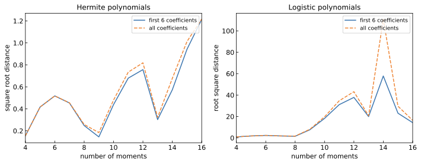
- Che cosa rappresenta
- d2(ĉ(N), c) senza coda di troncamento, N = 4…16. Non è |ĉ|, non è cond(A), non è la densità. Scale y incommensurabili (Hermite ~ 1.2, Logistica ~ 100) e ylabel diversi. I cj Fourier sono CLR di pCOS su L = 4 dove |clr| ~ 25 a destra: il bersaglio è già fuori da |clr| < 10. Non è Heston (1993): parametri calibrati a skew −1.2 e exkurt 2.5, CF Gatheral, cumulanti mpmath.
- Interpretazione
- Cinque parametri per due momenti: la legge non è identificata. A N = 14 Logistica d2 ~ 100 implica ‖ĉ − c‖ ~ 100, quindi ĉ è esploso. Il grafico mescola momenti numerici, cond(A) e lstsq. Per N ≤ 6 blu ≡ arancione per costruzione.
- Hermite
- Oscilla (minimo ~ N = 9, tuffo a N = 13, spike a N = 16 ≈ 1.2). Blu e arancione sovrapposti dopo N = 6 dicono che l’errore non è solo nei gradi alti. Il tuffo a 13 non è il lstsq CGMY (quello schiaccia ĉ → 0). Da questa figura sola non si distingue LU instabile vs minimi quadrati.
- Logistica
- «Piccolo fino a N ≈ 8» è relativo a una scala da 100: a N = 8 si è già fuori dalla scala Hermite. A N = 14 first-6 ~ 55 e all ~ 100: l’errore non è tutto nei gradi alti. Poi la curva scende a N = 16: non è monotonia di instabilità.
- Coerenza col paper
- Parziale. Catturare «l’instabilità» non è replicare Fig. 3. Senza overlay sul PDF di Gambaro il picco a 100 è inverificabile.
Critico Heston
Relatore: (1) perché Fig. 3 omette cond(AN), residuo e ‖ĉ‖2?
(2) i cumulanti di ordine ≥ 20 via mpmath.diff: quanto è rumore di differenziazione in Ã?
(3) in che senso è «Heston» se non sono i parametri 1993 e (skew, curtosi) non fissano i momenti alti?
Figura 4 — CLR di tre PDF parziale
Gambaro Fig. 4 · figure_04_clr_three_pdfs.pdf · tre I* diversi, ν gaussiana per tutti
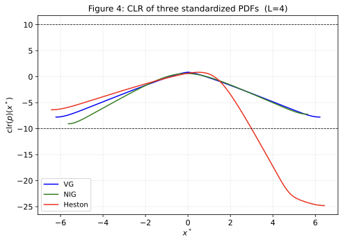
- Che cosa rappresenta
- clr(p)(x*) = log p(x*) − Eν[log p] delle tre densità COS standardizzate. Linee a ±10: soglia usata per il dominio ristretto Heston.
- Interpretazione
- clr(p) = log pCOS − Eν gauss[log p] su tre I* (eq. 22, L = 4). Le linee ±10 non sono il dominio ristretto:
clr_domain taglia su log p > −10, senza ricalcolare la CLR e senza simmetria. Heston a destra ~ −25: fuori dal regime |clr| < 10 del paper. A sinistra Heston è la meno negativa (~ −6 vs VG −7.5, NIG −9) ⇒ coda sinistra più pesante e destra più leggera tra i tre. VG esattamente pari; NIG coda destra più pesante. NIG non è il punto medio (kurtosi minima). |clr| < 10 dice che I è legale per B2, non che ĉ sia accurato.
- Hermite / Logistica
- Qui non ci sono espansioni: solo pCOS. |clr| NIG max = 9.06, sfiora la soglia 10 — L = 4 è ancora legale, non «largamente dentro».
- Coerenza col paper
- Overlay a tre sì. Heston su questo L = 4 è fuori dal regime di lavoro del paper (|clr| < 10). Senza i parametri di Gambaro non è nemmeno lo stesso processo. No se si attribuisce al NIG la coda sinistra da equity.
Critico NIG
«Tutti i modelli hanno coda sinistra più pesante» è falso. Relatore: (1) μ = 0, θ = 0.05, media 0.05 e skew +0.223: in che senso è il caso intermedio se la kurtosi è la più piccola e il segno dello skew è l’opposto di Heston?
(2) perché la CLR usa ν gaussiana anche quando si parla di Logistica?
Critico Heston
Relatore: (1) a x* ≈ 3 già clr ≈ −10: perché Fig. 8/12 usano comunque L = 4?
(2) con ν logistica il crollo a −25 resterebbe qualitativamente lo stesso?
(3) quanto del −25 è legge di Heston e quanto è COS+clipping sulla coda destra?
Figura 4 (quattro) — CLR con CGMY estensione
Non è nel paper · figure_04_clr_four_pdfs.pdf
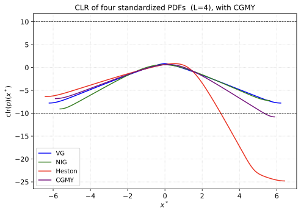
- Che cosa rappresenta
- Stesso CLR, più il CGMY (G = 7 < M = 12 ⇒ coda sinistra più grassa).
- Interpretazione
- Il CGMY sta tra NIG e Heston sulla coda destra, non è il più estremo: Heston scende ancora di più. A x* ≈ +6, |clr| del CGMY supera 10 (≈ 10.8): siamo fuori dalla tolleranza del paper sul 5% del dominio.
- Hermite / Logistica
- Assenti (solo COS).
- Coerenza col paper
- Non applicabile: figura extra. Il messaggio “coda sinistra più pesante” è vero per CGMY e Heston, falso come regola globale (NIG è right-skew).
Critico CGMY
Qui non c’è né Hermite né Logistica: è solo COS. Inventare un vantaggio di base da questa figura è un errore di oggetto.
Relatore: (1) lo zero del CLR è Eν gauss[log p] — con ν logistica la lettura delle code cambierebbe?
(2) |clr(b*)| = 10.79 > 10 sul 5% di I*: come si commentano code fuori dalla tolleranza di Gambaro?
(3) perché vendere un overlay extra come replica della Fig. 4?
Figura 5 — Distanze densità VG coerente
Gambaro Fig. 5 · N = 2…16 · ĉ
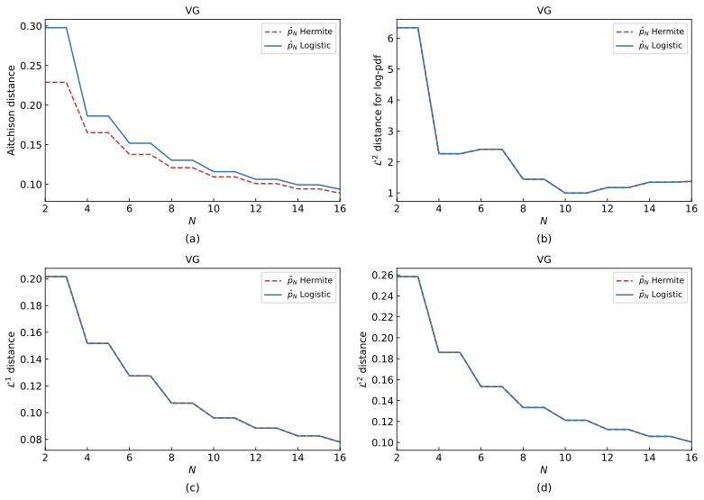
- Che cosa rappresenta
- Quattro distanze tra p̂N e pCOS: (a) Aitchison pesata da ν, (b) L2 sui log non pesata, (c) L1, (d) L2. A ogni N si costruisce p̂N = Ĉ0 exp(Σj=1N ĉj φj).
- Interpretazione
- Convergenza della densità, non dei coefficienti. (b)(c)(d) devono coincidere: stesso polinomio. (a) può differire: stesso p̂, ν diversa — Aitchison Hermite più bassa perché ω concentra al centro, non perché Hermite «fitta meglio». Scaletta: N = 2 ≡ N = 3, calo a N = 4, plateau N = 5, calo a N = 6 (b6 = −√5 mh4 è il primo ingresso diretto della kurtosi). Gobba log-L2 a N ≈ 5–7 attesa; dopo N = 11 il log-L2 risale ≈ 1.0 → 1.4 mentre L1/L2 continuano a scendere: il log pesa le code (U-turn Fig. 9), L1 pesa il corpo.
- Hermite
- Su (b)(c)(d) è la Logistica. L1 ≈ 0.20 → 0.078. Nessun crollo a N = 16. Quattro pannelli ≠ quattro vittorie Hermite.
- Logistica
- Non un secondo metodo sulla densità: altra coordinata dello stesso p̂. Aitchison più alta perché νL ha code più pesanti e vede il mismatch di coda. Nessun picco catastrofico a N = 6 (f al bordo gestibile).
- Coerenza col paper
- Layout e scaletta da simmetria: sì. «Distanze decrescenti» sul log-L2 è falso (rimbalzo post N = 11). Se Gambaro separa visibilmente Hermite e Logistic su L1/L2, o il paper offsetta le curve, o «Hermite outperforma» è incompatibile con Q cambio di base.
Critico VG
Relatore: se Q è cambio di base, quale pannello si può citare per «Hermite outperforma la Logistica» senza barare sulla geometria ν? Cosa misura la gobba a N = 6 più il rimbalzo del log dopo N = 11?
Figura 6 — Distanze densità NIG coerente
Gambaro Fig. 6 · ĉ
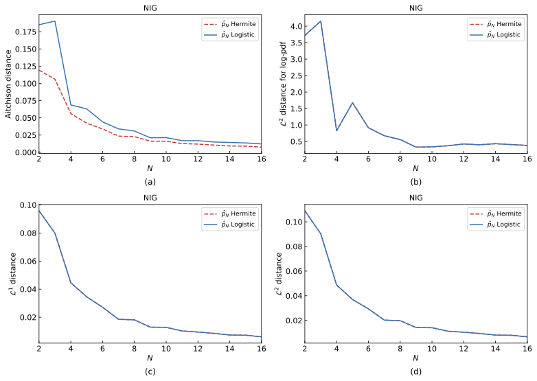
- Che cosa rappresenta
- Come Fig. 5, sul NIG.
- Interpretazione
- L1 e L2 scendono in modo monotono (0.096 → 0.006). Il log-L2 no: picco a N = 3 (4.15), gobba a N = 5, risale N = 9→12. «Tutte le distanze scendono» è falso. H = L su (b)(c)(d) perché è la stessa densità (max |p̂H−p̂L| ≈ 10−15), non perché due metodi siano altrettanto bravi. A N = 16 le code sono troppo sottili, non «giuste».
- Hermite
- Aitchison 0.119 → 0.0075. Nessun lstsq a N ≤ 16; cond = 3.5×1013. f(right) = −8.14: non esplode (contrasto CGMY), ma sottostima p(a).
- Logistica
- Stesso p̂ su L1/L2/log. Aitchison a N = 16 è 0.012 (+63% vs Hermite): νL pesa di più le code sottostimate. Fig. 2 all a 0.22 coesiste con L1 a 0.006 — ruoli distinti (coordinate vs densità).
- Coerenza col paper
- Layout sì. «Hermite slightly outperforms Logistic» (Gambaro su Fig. 10) su (c)(d) della replica non può essere vero: stessa funzione. Resta solo Aitchison, che confronta due ν.
Critico NIG
Pannelli (c)(d) con due curve sono ridondanti se non si dichiara p̂H = p̂L.
Relatore: in che senso empirico Hermite è migliore, se Aitchison usa due prodotti interni diversi?
Figura 7 — Distanze Heston, dominio ristretto parziale
Gambaro Fig. 7 · euristica log p > −10, non |clr| < 10 · ĉ
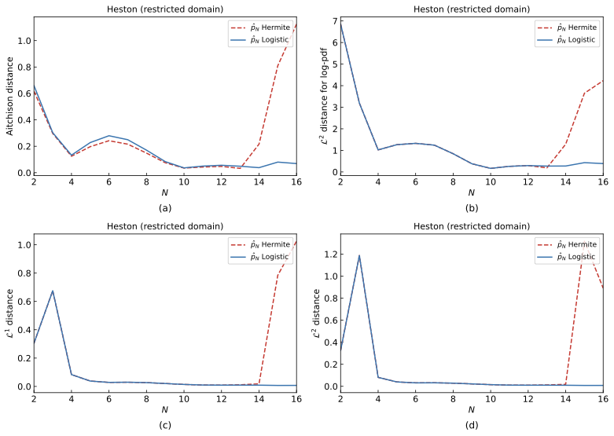
- Che cosa rappresenta
- Quattro distanze su Irestr scelto dove log pCOS > −10 (2000 punti, primo/ultimo indice). Non ricalcola la CLR, non simmetrizza. Ĉ0 su Irestr; COS resta espanso su Ifull: si confronta una probabilità (massa 1) con una sotto-probabilità. L1/L2 non sono invarianti. [a, b] non è stampato. Non confrontare 1-a-1 con Fig. 8.
- Interpretazione
- Il taglio è quasi solo a destra (coda leggera); a sinistra Irestr ≈ IL=4. «Fino a N ≈ 13 coincidono e scendono» è falso: Aitchison Hermite sta sotto (ν diversa); minimo a N = 4, gobba a N = 6; log-L2 è un plateau N = 4…8.
- Hermite
- Crollo a N = 14–16. Fig. 11 a N = 16 è densità piatta (max ≈ 0.55) ⇒ più lstsq che esplosione LU. Soglia 1014 non è nel paper. A N = 6 H = L al più su L1/L2/log, non su Aitchison.
- Logistica
- Picco L1 ≈ 0.67, L2 ≈ 1.2 a N = 3. Aitchison a N = 2 già ≈ 0.6; a N = 16 risale un poco. Sopravvivere su un I diverso da Fig. 8 non è superiorità della base sul modello Heston.
- Coerenza col paper
- Il paper usa un dominio ristretto; questa euristica + C0 su Irestr e COS su Ifull non è dichiarato essere l’esperimento di Gambaro. Convergenza fino a 13 e cadavere Hermite ≠ Fig. 7 del paper.
Critico Heston
Relatore: (1) qual è [a, b] numerico di Fig. 7, e perché non è in figura?
(2) L1 tra p̂ (massa 1) e pCOS (massa < 1) cosa misura?
(3) cond(A), ‖ĉ‖2 e residuo a N = 14, 16 prima di dire lstsq o «Hermite non ama Heston».
Figura 8 — Distanze Heston L = 4, ĉ non replica il paper
Stesso layout di Gambaro Fig. 8, ma coefficienti del sistema lineare · solo Logistica
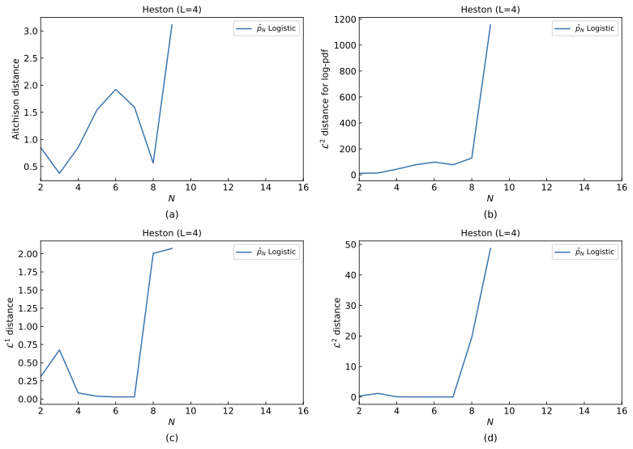
- Che cosa rappresenta
- p̂N Logistica da ĉ vs COS su L = 4. Titolo PDF identico alla copia Fourier: dal file non si capisce che non è Gambaro. Hermite omessa è una scelta di plot, non una prova. Aitchison con ν logistica.
- Interpretazione
- Non è Fig. 8 del paper. Il crollo visibile parte a N = 8 (L1 → 2, L2 → 20), non «dopo N ≈ 7–9». Aitchison a N = 6 è già ~ 1.9. log-L2 a N = 9 ~ 103 poi le curve scompaiono (NaN/inf), non «vengono tagliate». A N ≥ 8 L1 → 2 è la distanza massima tra due PDF: non c’è più densità. Underflow log ≈ −700 è Fig. 12 a N = 16, un altro oggetto.
- Hermite
- Non plottata. «Esploderebbe anche lei» è un controfattuale: ĉH = ĉL solo se entrambi i sistemi sono risolti. Nasconderla su L = 4 impedisce di vedere il fallimento.
- Logistica
- Aitchison accettabile solo a N = 3 (~ 0.4); altrove > 1. L1 «ok» solo a N = 4–7. Lo spazio vuoto fino a 16 è un buco numerico.
- Coerenza col paper
- No. Se Gambaro ha plottato lo stimatore a momenti, questa figura è un fallimento. Se ha plottato Fourier, il numero di figura è sbagliato. Lo split ĉ vs
_c_fourier va nel titolo del PDF, non solo nel README.
Critico Heston
Relatore: (1) perché Fig. 8 e Fig. 8 _c_fourier hanno lo stesso titolo?
(2) a N = 8 L1 ≈ 2: si sta ancora parlando di un’approssimazione in B2?
(3) se Gambaro Fig. 8 ha la Logistica decrescente, perché mostrare questa come Fig. 8 nella tesi?
Figura 8 Fourier — Heston L = 4, c eq. 9 parziale
Suffisso _c_fourier · altro stimatore, non ĉ
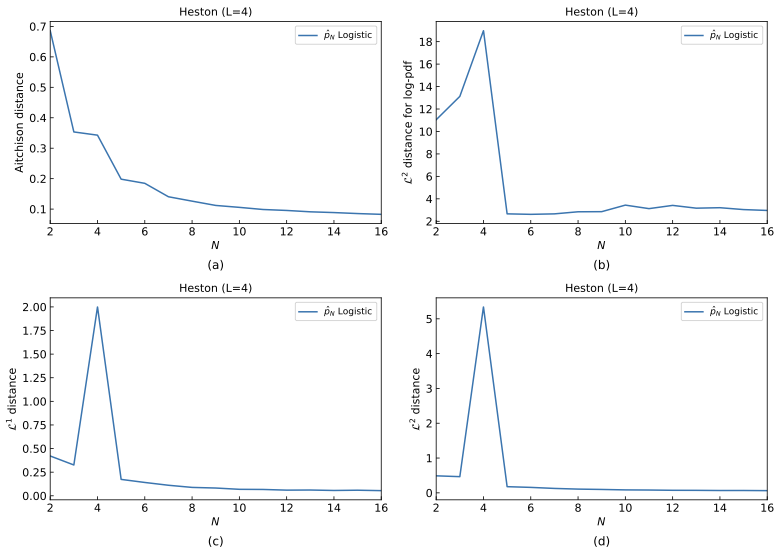
- Che cosa rappresenta
- pN = Ĉ0 exp(Σ cj Lj) con cj Fourier-CLR su L = 4, non il matching di momenti. I cj sono trapezi su una CLR che a destra vale ~ −25. Non è «lo stesso plot»: è un altro coefficiente.
- Interpretazione
- Aitchison 0.7 → 0.08 maschera la coda (νL). Il picco a N = 4 non è una nota: L1 ≈ 2, L2 ≈ 5.3, log-L2 ≈ 19. Dopo N = 5 il log-L2 non va a 0: plateau ~ 3 fino a 16. «Distanze piccole» è Aitchison-washing. Matching visivo ≠ stesso estimatore.
- Hermite
- Non mostrata. Per i cj Fourier Hermite la teoria predice la proiezione L2(ω): è proprio lo strumento per testare se la Logistica è meglio sulle code.
logistic_only lo cancella.
- Logistica
- Aitchison e, dopo N = 4, L1/L2 scendono. Non è monotonia da manuale. Resta un’espansione fuori da |clr| < 10.
- Coerenza col paper
- Se Gambaro Fig. 8 è eq. 15, il badge «coerente» sta sull’estimatore sbagliato. Se è eq. 9, allora Fig. 8 senza suffisso è un fallimento spaccia to per capitolo. Il picco a N = 4 può già non coincidere col PDF di Gambaro.
Critico Heston
Relatore: (1) Gambaro Fig. 8 è eq. 15 o eq. 9?
(2) perché log-L2 resta ~ 3 mentre Aitchison scende a 0.08 — quale metrica «conferma» il paper?
(3) ricostruire Hermite Fourier su L = 4: se funziona, dove sta «solo Logistica come il paper»?
Figura 9 — PDF e log-PDF VG coerente
Gambaro Fig. 9 · N = 6 e 16 · ĉ
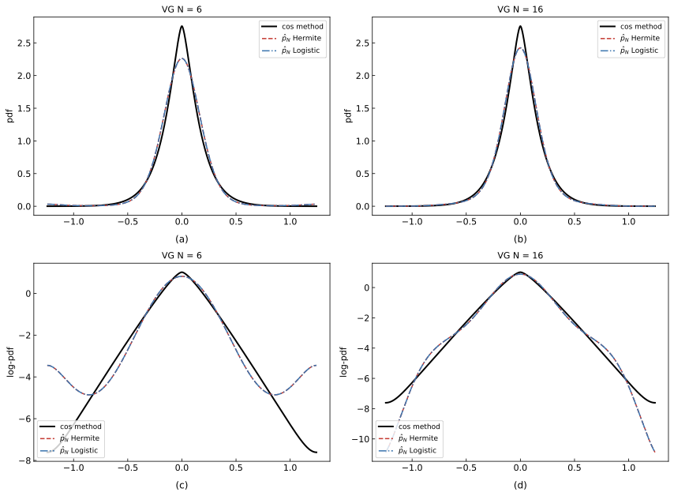
- Che cosa rappresenta
- p̂N(ĉ) vs COS (N_COS = 4096, non la VG analitica) su I ≈ [−1.25, 1.25], scala originale. (a)(b) pdf N = 6 e 16; (c)(d) log. Rosso Hermite, blu Logistica: stessa funzione.
- Interpretazione
- VG leptocurtica: il modo è sottostimato (COS ≈ 2.75 vs p̂ ≈ 2.25 a N = 6, ≈ 2.4 a N = 16), simmetrico, non uno shift. (c): U-turn per |x| ≳ 0.9 (log p̂ risale a ≈ −3.5, COS a ≈ −7.5). È l’esponente pari di grado 6 su I* largo: se il leading coeff è > 0, log p̂ → +∞ ai bordi e Ĉ0 schiaccia anche il picco. Non è un baco VG; le code vere sono esponenziali (log p ∼ −c|x|). (d): niente U-turn in su; over-decay (p̂ → −10 vs COS ≈ −7.5). Grado 16 con leading coeff < 0.
- Hermite
- Indistinguibile dalla Logistica. Conferma Fig. 5(b–d).
- Logistica
- Sovrapposta. Chi «vede» la blu staccarsi sta leggendo lo stile dash-dot. Nessun vantaggio di ν sulla pdf Lebesgue.
- Coerenza col paper
- Layout sì. U-turn a N = 6 è ciò che deve vedersi per un VG a kurtosi 2 con esponente di grado 6; se nel paper (c) è liscio, I è più stretto o N = 6 non è ĉ. N = 16: corpo migliore, code troppo sottili — non è convergenza uniforme su I.
Critico VG
Relatore: lo U-turn simmetrico a N = 6 è un difetto del VG (θ = 0, κ = 2) o la geometria di un esponente pari di grado 6 su |x*| ≈ 6? Perché la CLR COS in Fig. 4 resta pari e dentro ±10, e perché quella figura non autorizza nessuna classifica Hermite/Logistica?
Figura 10 — PDF e log-PDF NIG coerente
Gambaro Fig. 10 · ĉ
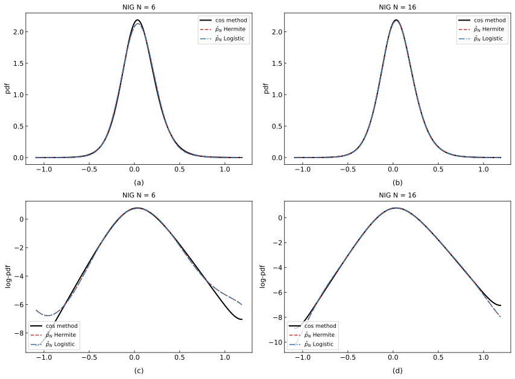
- Che cosa rappresenta
- Come Fig. 9, in scala originale I ≈ [−1.09, 1.19], non x*. Benchmark COS, non la NIG in forma chiusa. Hermite e Logistica sono la stessa funzione (errore di macchina).
- Interpretazione
- Il corpo a N = 16 è ottimo; le code no. Picco COS a x = 0.034 (altezza 2.19), non in 0 e non in m1 = 0.05 (moda < media, skew positiva). N = 6: code sovrastimate (p̂(a) ×12 vs COS). N = 16: code sottostimate (p̂(a) ×0.25). f(right) < 0 evita l’esplosione, non certifica la coda. I pannelli PDF nascondono ciò che il log mostra.
- Hermite
- Non «batte» la Logistica: overlay a precisione macchina. A N = 16 il log a destra va a ≈ −8 vs COS ≈ −7.
- Logistica
- Identica. «Logistic peggiore sulle code» (Gambaro Fig. 10) qui non si vede. Quell’inferiorità, se c’è, sta in Fig. 2 e in Aitchison.
- Coerenza col paper
- Layout sì. «Hermite slightly outperforms Logistic» sulla replica di Fig. 10 no. Presentare il NIG come stress test è fuorviante: è il caso più facile (exkurt < 1, |clr| < 10).
Critico NIG
Relatore: se max |p̂H − p̂L| è 10−12, Fig. 6(b,c,d) e Fig. 10 mostrano una sola famiglia esponenziale di grado N. Perché Gambaro scrive che Hermite è leggermente migliore?
Figura 11 — Densità Heston, dominio ristretto parziale
Gambaro Fig. 11 · ĉ
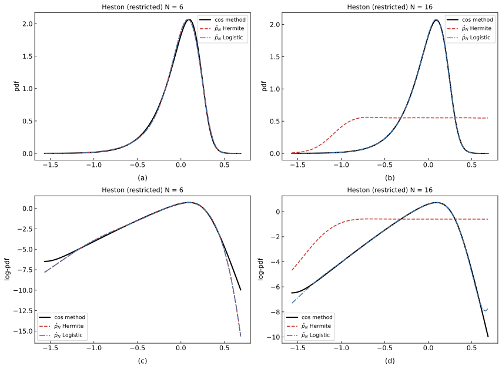
- Che cosa rappresenta
- PDF/log su Irestr a N = 6 e 16, ĉ, entrambe le basi vs COS. Stessi vizi di Fig. 7: euristica log p > −10, C0 su Irestr, COS su Ifull. Asse x originale ≈ [−1.55, 0.7], non x*: a sinistra quasi L = 4, a destra tagliato.
- Interpretazione
- N = 6: corpo coincide; a destra il log va a ~ −15 vs COS ~ −10, non «scende un po’». N = 16: Logistica sul corpo, con risalita al bordo destro; Hermite schiacciata (picco ~ 0.55). Quella forma è ĉ distrutto, non «Heston».
- Hermite
- A N = 6 è lo stesso polinomio della Logistica, non un successo della base gaussiana. A N = 16 inutile (max 0.55 vs COS ~ 2.05). Qui Hermite non è omessa: si vede il cadavere che Fig. 12 nasconde.
- Logistica
- Corpo buono sul ristretto, con C0 ricalcolato. Trasferire questo a Fig. 8/12 L = 4 è illecito. «Sembra Gambaro» senza overlay è estetica.
- Coerenza col paper
- N = 16 Hermite morto non è nel paper. Scaricare su lstsq/cond(A) è obbligatorio, ma allora non è una replica di Fig. 11. Il modello è calibrato, non 1993.
Critico Heston
Relatore: (1) p̂16H piatta: cond(A), ‖ĉ‖2, residuo — solve o lstsq?
(2) perché Irestr è asimmetrico se la docstring parla di [k1−h, k1+h]?
(3) se a N = 6 H = L, in che senso Fig. 11 mostra un confronto di basi?
Figura 12 — Densità Heston L = 4, ĉ non replica il paper
Gambaro Fig. 12 layout · solo Logistica · ĉ
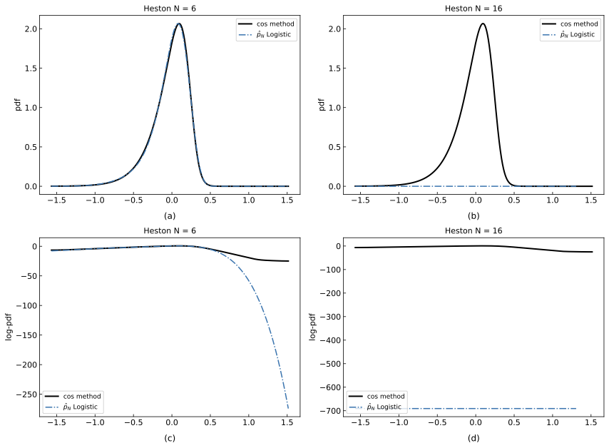
- Che cosa rappresenta
- L = 4, ĉ Logistica vs COS,
show_hermite=False. Stesso titolo «Heston N = …» della copia Fourier. Asse ≈ [−1.5, 1.5] originale: è I largo.
- Interpretazione
- N = 6: il corpo «accettabile» nasconde il log a destra a ~ −250 (COS resta ~ −25, Fig. 4). L’esponente sbaglia la coda leggera di un ordine di grandezza. N = 16: log ≈ −700 = log(10−300), densità numericamente zero; la blu non copre tutto I (NaN). Gemello di Fig. 8 ĉ.
- Hermite
- Omessa. Fig. 11 a N = 16 Hermite è schiacciata, non NaN: su L = 4 servirebbe vederla.
show_hermite=False è esattamente dove serve la curva.
- Logistica
- Il picco a N = 6 non è la tesi sulle code, e Heston è un problema di code. A N = 16 non c’è Logistica: c’è underflow/NaN.
- Coerenza col paper
- No. Gambaro Fig. 12 a N = 16 ha una densità visibile: è la copia
_c_fourier, non questa. Lo split va nel testo della tesi, non in una nota del README.
Critico Heston
Relatore: (1) perché Hermite è spenta proprio sul caso in cui Fig. 11 mostra il cadavere?
(2) log = −700: Ĉ0 = 0, exp(f) underflow, o entrambi?
(3) se Fig. 12 ĉ è morta e Fig. 12 Fourier «sembra il paper», quale delle due è l’esperimento di Gambaro?
Figura 12 Fourier — Heston L = 4, c eq. 9 parziale
_c_fourier · eq. 9 + C0, non eq. 15
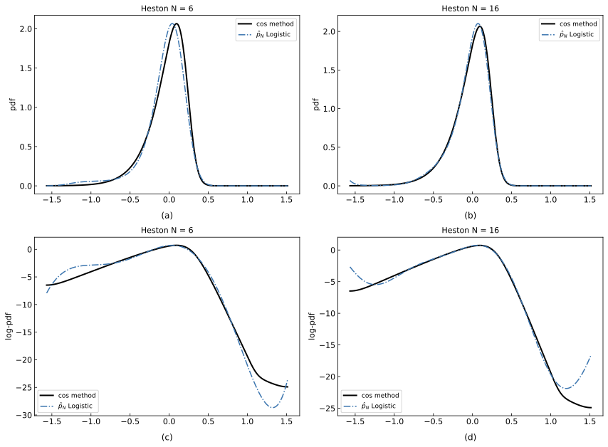
- Che cosa rappresenta
- Stesso layout, cj Fourier logistici, Hermite di nuovo omessa. I cj vivono su L = 4 con |clr| a destra ~ 25. Questa è la figura che assomiglia al paper, non la 12 senza suffisso.
- Interpretazione
- N = 6 non «già insegue» il COS: picco spostato, spalla sinistra sopra. N = 16: corpo buono; code del log con U-turn a entrambi i bordi. Ordine ~ −25 come Fig. 4, non −700: certifica che Fourier+C0 non underflowa, non il matching di momenti né |clr| < 10.
- Hermite
- Assente. La proiezione Fourier-Hermite è l’oggetto teorico (eq. 7–9 con ω). Nasconderla rende tautologica la frase «questa è la curva da affiancare a Gambaro».
- Logistica
- Da affiancare a Gambaro Fig. 12 solo dichiarando Fourier, non ĉ. Se Gambaro è più pulito alle code, nemmeno questa copia è fedele; se ha gli stessi U-turn, il paper è in regime L = 4 illecito per |clr| < 10.
- Coerenza col paper
- Il match visivo è il problema: replica l’aspetto del paper con un estimatore diverso. Fig. 12 senza suffisso resta il vero output dello stimatore a momenti, ed è morta.
Critico Heston
Relatore: (1) se _c_fourier «è» Fig. 12 di Gambaro, lo stimatore della tesi (eq. 15) fallisce Heston L = 4: dove sta scritto?
(2) U-turn a x ≈ ±1.5: troncamento polinomiale o dominio troppo largo rispetto a Fig. 4?
(3) mostrare Hermite Fourier a N = 6 e 16: se il corpo è analogo, perché show_hermite=False?
Figura 13 — Coefficienti CGMY estensione
Non in Gambaro · analogo Figs 1–3 · G=7, M=12, Y=0.6, κ2=0.04 · rigenerata senza lstsq
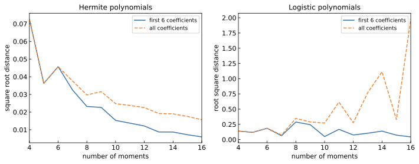
- Che cosa rappresenta
- d2(ĉ(N), c Fourier), non |ĉ| → 0. Blu primi 6, arancione tutti.
- Interpretazione
- Con LU pura Hermite insegue c in modo monotono: 0.073 (N = 4) → 0.016 (N = 16), first-6 → 0.009. cond(AH) a N = 16 è 1.66×1015, ma la LU resta backward-stable (residuo ~10−8) e d2 continua a scendere: il vecchio spike a N = 16 era interamente il fallback lstsq (ĉ → 0, residuo ≈ 0.99), non instabilità reale. Logistica: primi 6 stabili, “all” oscilla fino a ≈ 2 (coordinate Q, non densità — vedi Fig. 14).
- Hermite
- Il migliore dei quattro modelli su questa metrica insieme a NIG: nessuno spike residuo. L’effetto vero del condizionamento (mh30 ≈ 1.7×1010, momenti dominati dalla massa fuori da [a,b]) comparirebbe solo oltre N ≈ 16, fuori dal grafico.
- Logistica
- Come per il NIG: coordinate alte lontane dai cL Fourier (zigzag fino a 2), densità comunque buona. cond(AL) ≤ 1.2×1010 fino a N = 16.
- Coerenza col paper
- Estensione. Ora il pannello Hermite ha la stessa forma qualitativa delle Figg. 1–2 (VG/NIG): decadimento monotono, scaletta pari/dispari. Il CGMY si colloca tra NIG e Heston per difficoltà.
Critico CGMY — aggiornamento
Le obiezioni (1)–(3) originali sono superate: lo spike era l’artefatto lstsq, ora rimosso.
Restano aperte: (1) documentare in tesi che cond(AH) = 1.7×1015 a N = 16 e perché la LU è comunque affidabile (residuo, confronto con c Fourier);
(2) l’oscillazione “all” della Logistica merita la stessa spiegazione coordinate-vs-densità del NIG.
Figura 14 — Distanze densità CGMY estensione
Analogo Figs 5–6 · ĉ
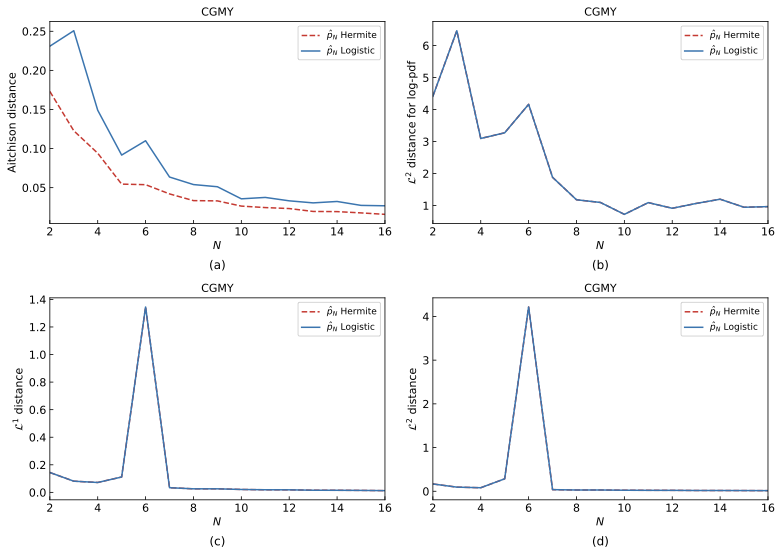
- Che cosa rappresenta
- Aitchison, log-L2, L1, L2 di p̂N vs COS, N = 2…16.
- Interpretazione
- Un solo fenomeno residuo: il picco a N = 6 su L1 ≈ 1.35, L2 ≈ 4.2 e log-L2 ≈ 4.16, identico per le due basi (stesso polinomio): f(+5.88) = +4.90, p̂(b) ≈ 53, 67% della massa su x* > 3. Aitchison resta ≈ 0.05 perché νgauss a destra è ~10−8. Causa: |clr(b)| = 10.8 > 10 — sul L = 4 il CGMY viola la condizione del paper (p. 13), come Heston. Da N = 7 in poi decadimento pulito fino a L1 ≈ 0.012 a N = 16 per entrambe le basi: il vecchio crollo Hermite a N = 16 era il fallback lstsq, rimosso.
- Hermite
- Identica alla Logistica su (b)(c)(d) per ogni N = 2…16; su Aitchison sta sotto (ν gaussiana concentrata al centro). Nessun crollo.
- Logistica
- Stesso picco a N = 6 (stesso polinomio), stessa discesa dopo. Aitchison leggermente più alta: νL vede di più le code.
- Coerenza col paper
- Nessuna figura CGMY in Gambaro. Il picco N = 6 non c’è su VG/NIG: è l’asimmetria left-skew (pendenze −2.4/+1.4 in x*) su un dominio simmetrico, non un baco della CF. Il grado 6 Fourier non esplode (L1 ≈ 0.023): è questo ĉ, non ogni troncamento a 6. La cura coerente col paper è il dominio ristretto → Fig. 16.
Critico CGMY — aggiornamento
Aitchison 0.054 vs log-L2 4.16 a N = 6: una nasconde la coda, l’altra no; cond(AH) a N = 6 è solo 5·102, quindi il picco non è ill-conditioning — resta valido.
Superato invece il punto sul «trend Hermite»: con LU pura non esiste alcun crollo a N = 16.
Relatore: (1) quale metrica è «ottima» a N = 6? (2) perché il picco appare solo qui e non su VG/NIG (risposta: |clr(b)| > 10, Fig. 4 quattro)?
Figura 15 — PDF e log-PDF CGMY estensione
Analogo Figs 9–10 · ĉ
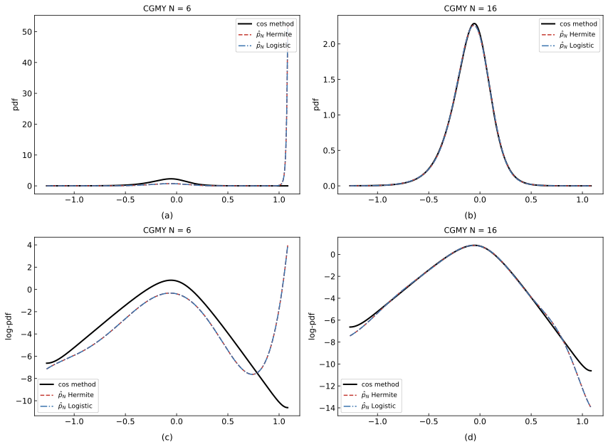
- Che cosa rappresenta
- p̂ vs COS a N = 6 e 16, lineare e log.
- Interpretazione
- N = 6: corpo sottostimato e schiacciato (Ĉ0 paga il picco), poi entrambe le basi sparano a destra (p̂(b) ≈ 53; un solo esponente, max |fH − fL| ≈ 0.02). N = 16: Hermite e Logistica sovrapposte al COS su tutto il corpo (L1 ≈ 0.0125) — la vecchia Hermite bimodale/schiacciata era il ĉ lstsq, rimosso. Nel log (d) la coda destra scende a ≈ −14 vs COS −10.6: sotto-stima di coda, non esplosione. Contribuiscono: peso ν ~ 10−8 al bordo (fit non vincolato), |clr(b)| > 10, e il fatto che lo stesso COS al bordo è appiattito (la serie di coseni ha derivata nulla in a e b: pendenza misurata −1.45 vs ≈ −2.6 teorica).
- Hermite
- N = 6 = Logistica (esplosione condivisa al bordo destro). N = 16: indistinguibile dalla Logistica e dal COS sul corpo.
- Logistica
- Identica a Hermite su entrambi gli N: stesso polinomio, code comprese.
- Coerenza col paper
- Estensione. Lo U-turn di coda a N = 6 è lo stesso meccanismo della Fig. 9 VG, aggravato dall’asimmetria: la coda leggera (M = 12) va raggiunta a −10.6 su un dominio simmetrico. Sul dominio ristretto (Fig. 17) il difetto rientra.
Critico CGMY — aggiornamento
Resta valido: a N = 6 max |fH − fL| ≈ 0.02, non sono due stimatori distinti; e 67% di massa a x* > 3 contro Aitchison 0.054 mostra quale metrica nasconde il difetto.
Superato: la Hermite piatta a N = 16 (era ‖ĉ‖ = 0.048 da lstsq; con LU ‖ĉ‖ = 0.78, residuo 10−8).
Relatore: (1) la sotto-stima di coda a N = 16 nel log (−14 vs −10.6) è del metodo o anche del benchmark COS appiattito al bordo?
Figura 16 — Distanze CGMY, dominio ristretto estensione
Analogo di Fig. 7 (Heston) · criterio log p > −10 · Irestr = [−1.269, 0.988], x* ∈ [−5.88, 5.40] · ĉ, LU
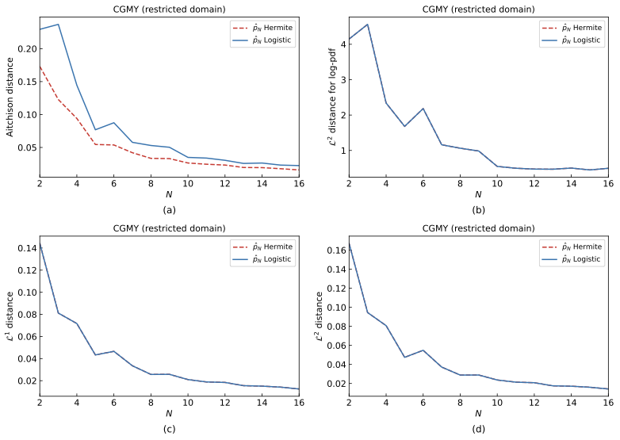
- Che cosa rappresenta
- Le stesse quattro distanze della Fig. 14, ma su Irestr: il dominio L = 4 tagliato dove log pCOS ≤ −10 (stesso proxy di Heston Fig. 7). Il taglio è solo a destra, dove la coda leggera (M = 12) fa violare |clr| < 10. Ĉ0 è ricalcolato su Irestr; i ĉ sono gli stessi della Fig. 14 (il sistema non dipende dal dominio).
- Interpretazione
- Il picco a N = 6 scompare: L1 passa da 1.345 (pieno) a 0.047 (ristretto) a parità di coefficienti. Non perché il polinomio migliori, ma perché la risalita di f (minimo di log p̂ a x* = 4.15, poi in su) resta quasi tutta oltre il taglio a 5.40, e Ĉ0 non paga più il picco. Tutte e quattro le metriche decadono in modo quasi monotono: L1 0.14 (N = 2) → 0.012 (N = 16), con la sola gobba residua a N = 5–6.
- Hermite
- Uguale alla Logistica su (b)(c)(d); su Aitchison sta sotto per la solita ν. Nessun crollo a N = 16 (LU, residuo ~10−8).
- Logistica
- Identica sulla densità. Aitchison parte più alta (0.23 a N = 2) e converge a ≈ 0.03.
- Coerenza col paper
- È l’applicazione al CGMY della prescrizione di Gambaro (p. 13): se |clr| > 10 su parte di I, si restringe il dominio — esattamente il trattamento riservato a Heston (Fig. 7). Il proxy log p > −10 differisce dal criterio esatto clr > −10 solo per lo shift Eν[log p] = 0.17: taglio a x* = 5.40 invece di 5.32, ~1.5% dell’ampiezza. Coerente a meno di questa approssimazione, documentata in
clr_domain.
Critico CGMY — nuova figura
Come per Fig. 7 Heston: Ĉ0 è su Irestr ma il COS resta espanso su Ifull — si confronta una densità (massa 1 su Irestr) con una sotto-probabilità.
Relatore: (1) stampare [a, b] ristretto in figura; (2) quanta massa COS resta fuori dal taglio (trascurabile, ma va detto); (3) il picco N = 6 «sparisce» per troncamento del dominio, non per correzione del polinomio: va scritto così anche in tesi.
Figura 17 — Densità CGMY, dominio ristretto estensione
Analogo di Fig. 11 (Heston) · N = 6 e 16 · ĉ, LU · entrambe le basi
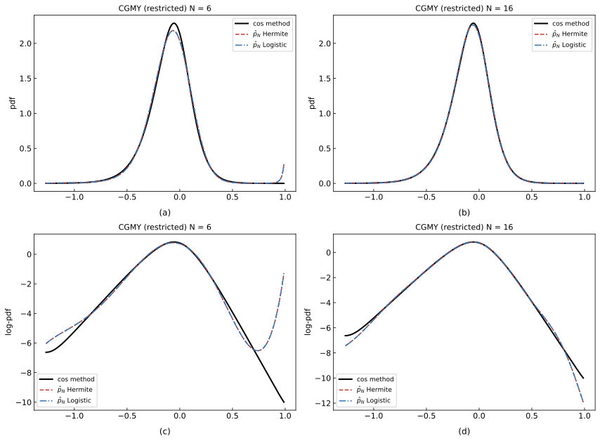
- Che cosa rappresenta
- PDF e log-PDF su Irestr a N = 6 e 16, stessi ĉ della Fig. 15, Ĉ0 ricalcolato sul dominio tagliato.
- Interpretazione
- N = 6 (a): il corpo ora si vede — picco p̂ ≈ 2.19 vs COS 2.29, con un residuo di risalita al bordo destro (p̂(br) ≈ 0.28: il taglio a 5.40 non è oltre il minimo di f a 4.15, un tratto di risalita entra ancora). Confrontare con la Fig. 15(a) dove il corpo era invisibile sotto il picco a 53. N = 16 (b): sovrapposizione completa. Nei log (c)(d): sinistra leggermente sovrastimata a N = 6, destra con U-turn contenuto a ≈ −1.3 (c) e sotto-stima a ≈ −12 (d).
- Hermite
- Presente e indistinguibile dalla Logistica a entrambi gli N: sul CGMY, a differenza di Heston Fig. 11, non c’è alcun «cadavere» Hermite.
- Logistica
- Identica (stesso polinomio). Il confronto di basi qui non discrimina nulla: è un test del dominio, non della base.
- Coerenza col paper
- Replica il protocollo Heston Fig. 11 sul modello esteso. Con dominio conforme a |clr| < 10 l’espansione a momenti funziona anche a N = 6: conferma che il problema della Fig. 15 era il dominio, non la CF CGMY né la base.
Critico CGMY — nuova figura
Relatore: (1) la risalita residua a destra a N = 6 (p̂(br) = 0.28 vs COS ≈ 5×10−5) va commentata: il taglio proxy non elimina il difetto del polinomio, lo maschera meno del pieno;
(2) taglio esatto |clr| < 10 (x* = 5.32) vs proxy (5.40): quanto cambierebbe p̂(br)?
(3) a N = 16 la coda destra sotto-stimata resta: dominio ristretto ≠ code corrette.